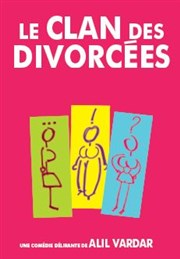
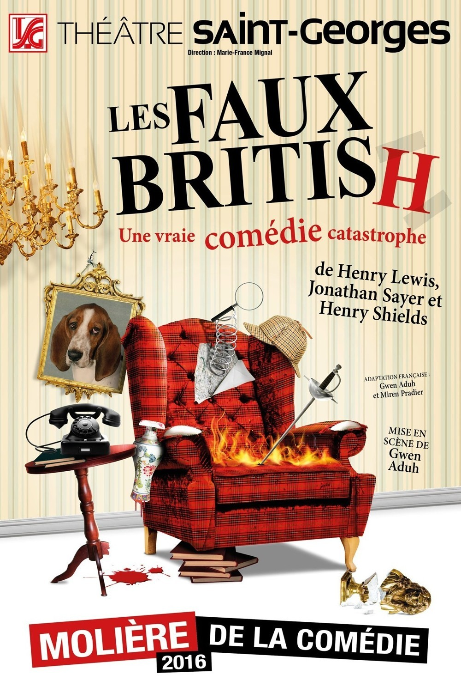
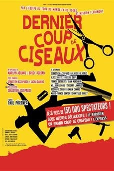

|  |
Le Clan des DivorcéesStéphanie d'Humily de Malanpry, une bourgeoise qui vient de quitter un berger ardéchois décide de changer de vie en partant s'installer à Paris. Pour vivre dans son grand appartement elle cherche deux colocataires, qu'elle va trouver sous les traits de deux autres femmes divorcées : Mary Bybowl, une anglaise un peu délurée qui vient de quitter un homme de plus ; et Brigitte, la rurale qui divorce aussi. Ces trois femmes aux caractères et statuts sociaux différents vont traverser cette épreuve en se soutenant mutuellement. |
|  |
Les Faux BritishImaginez 7 amateurs de romans noirs anglais qui décident de créer un spectacle alors qu’ils ne sont jamais montés sur scène ! Ils ont choisi une pièce inédite, un véritable chef d’oeuvre écrit par Conan Doyle lui-même (enfin, c’est ce qu’ils prétendent !)… L’action se situe fin XIXème, dans un superbe manoir, lors d’une soirée de fiançailles, en plein coeur de l’Angleterre. Les festivités vont enfin commencer quand un meurtre est commis. Chacun des invités présents dans le château devient alors… un dangereux suspect. |
|  |
Dernier Coup de CiseauxUn salon de coiffure, un meurtre, un flic... des suspects ; à vous de jouer ! La première pièce dont le public est le héros... Une comédie policière interactive. Un meurtre est commis chaque soir et c'est au public de résoudre l'enquête. |
This page has been coded during the FullStack program @LeWagon. That was probably the best experience of my entire life.